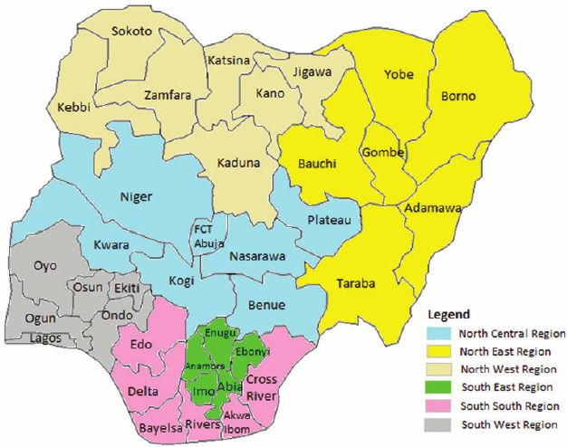

Nigeria, country located on the western coast of Africa. Nigeria has a diverse geography, with climates ranging from arid to humid equatorial. However, Nigeria’s most diverse feature is its people. Hundreds of languages are spoken in the country, including Yoruba, Igbo, Fula, Hausa, Edo, Ibibio, Tiv, and English. The country has abundant natural resources, notably large deposits of petroleum and natural gas.
The national capital is Abuja, in the Federal Capital Territory, which was created by decree in 1976. Lagos, the former capital, retains its standing as the country’s leading commercial and industrial city.
Modern Nigeria dates from 1914, when the British Protectorates of Northern and Southern Nigeria were joined. The country became independent on October 1, 1960, and in 1963 adopted a republican constitution but elected to stay a member of the Commonwealth.
Nigeria is bordered to the north by Niger, to the east by Chad and Cameroon, to the south by the Gulf of Guinea of the Atlantic Ocean, and to the west by Benin. Nigeria is not only large in area—larger than the U.S. state of Texas—but also Africa’s most populous country.

Nigeria's the Coat of Arms is her National Emblem consisting of symbols, which show the unity of the country. It stands for authority and power, the description of the Coat of Arms. The black soil represents the good soil of Nigeria, the Eagle represent the strength of Nigeria and the Horses represent the dignity and pride of Nigeria.
The mark on the shield, which looks like letter 'Y' represents river Niger and Benue, which flows through parts of Nigeria. The flower stand for beauty of Nigeria. They are of the species costus spectabilis and are found in most parts of Nigeria. Nigeria's motto is Unity and Faith, Peace and Progress and is written on the Coat of Arms. The National Anthem was adopted in October 1978 and score was composed by Mr. Ben Odiase, the Director of Music and Nigeria police Band.
A diagrammatic representation of the earth's surface or part of it OR (mathematics) a mathematical relation such that each element of a given set (the domain of the function) is associated with an element of another set (the range of the function). This are General defination of a map